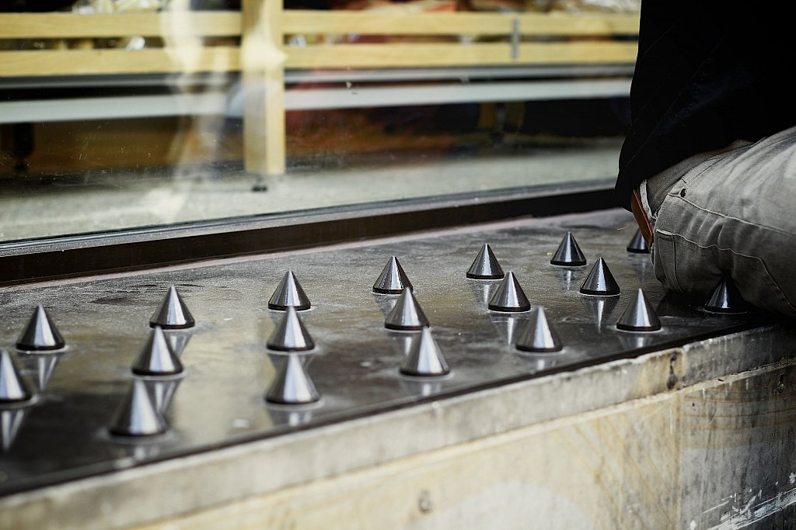
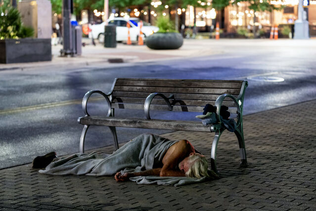

O design busca criar objetos, imagens e soluções que sejam funcionais, acessíveis e capazes de resolver problemas da sociedade. Segundo Bürdek e Papanek, o design não deve se limitar à estética ou ao consumo, mas também possuir uma responsabilidade social. Nesse contexto, o design social procura atender principalmente pessoas e comunidades em situação de vulnerabilidade, promovendo inclusão, autonomia, conforto e dignidade.
Acho que a inovação só vale a pena quando resolve um problema real de alguém — não basta ser bonita ou nova, ela precisa devolver dignidade a quem menos tem acesso a soluções.
Exemplos como o Hippo Water Roller, que facilita o transporte de água, e o Liftware, que auxilia pessoas com Parkinson durante a alimentação, demonstram como o design pode melhorar diretamente a qualidade de vida.
A arquitetura hostil consiste na criação de espaços urbanos com elementos que dificultam ou impedem sua utilização por determinados grupos, principalmente pessoas em situação de rua. Bancos desconfortáveis, divisórias, pedras, grades e estruturas pontiagudas são exemplos dessa prática, que prioriza a aparência e a "limpeza" dos espaços em detrimento da dignidade humana.

Essa realidade está relacionada à segregação socioespacial, na qual as diferenças econômicas determinam quem pode ocupar e utilizar determinados lugares. Além disso, a população em situação de rua enfrenta problemas como falta de moradia, desemprego, violência, preconceito e dificuldade de acesso à saúde.

Pra mim, um espaço público cheio de pinos e grades diz muito mais sobre quem projetou do que sobre quem é "afastado" por ele. Cidade de verdade é a que cabe todo mundo, não só quem incomoda menos.
Nesse sentido, o espaço público deveria ser entendido como um espaço comum e democrático, garantindo a convivência entre diferentes grupos e o direito à cidade, conforme os direitos sociais previstos na Constituição Federal.
Como alternativa à arquitetura hostil, o design social propõe espaços e produtos que promovam inclusão, acolhimento e participação. Exemplos como os bancos-abrigo, o projeto Lava Mãe, que transforma ônibus em unidades móveis de higiene, e os banheiros públicos autolimpantes mostram como o design e a tecnologia podem ser utilizados para atender às necessidades da população vulnerável.
Acredito que tecnologia só faz sentido quando escuta quem vai usá-la. De nada adianta simular um projeto urbano bonito no computador se a população que vive ali não tem voz nas decisões.
Dessa forma, a tecnologia deixa de ser apenas uma ferramenta técnica e passa a contribuir para a justiça social. O objetivo é construir cidades mais acessíveis e democráticas, nas quais o design se adapte às necessidades das pessoas, e não seja utilizado como instrumento de exclusão.